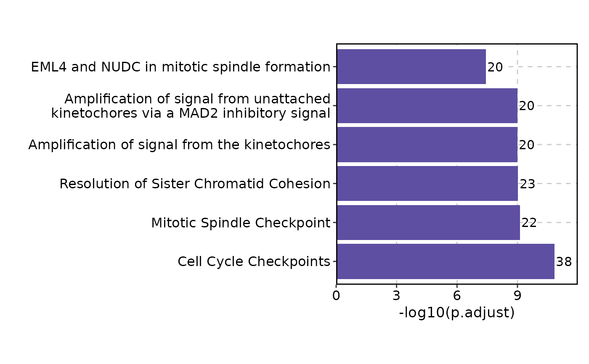
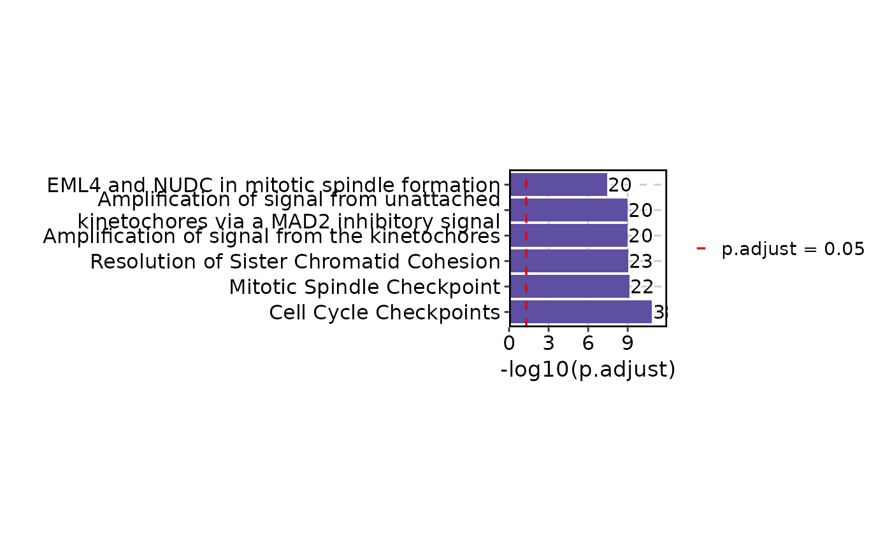
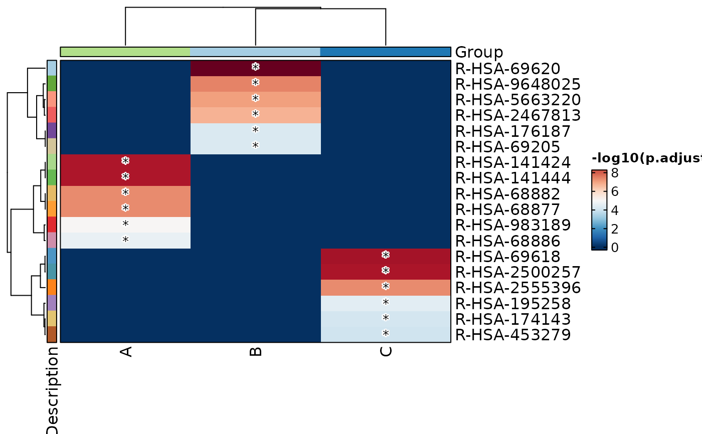
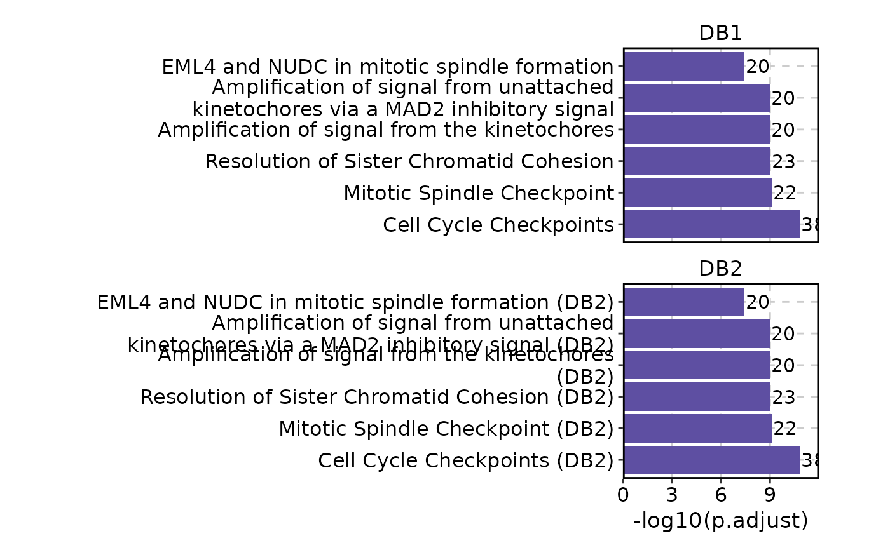
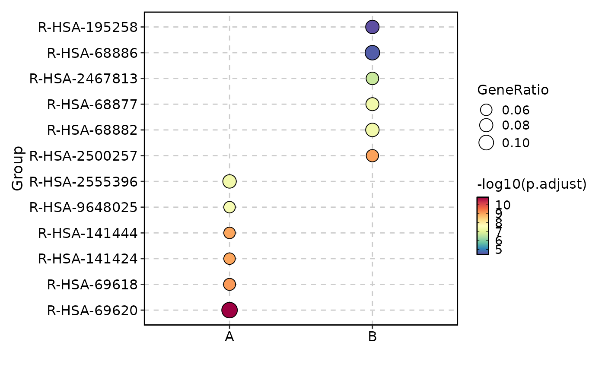
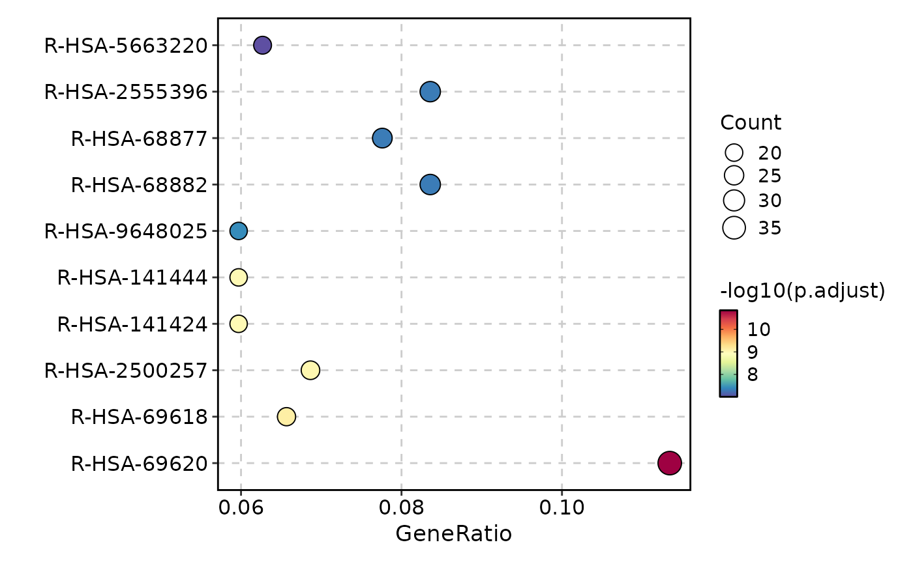
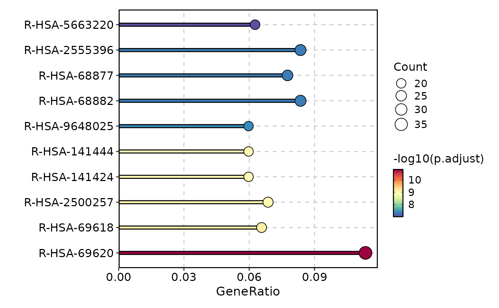
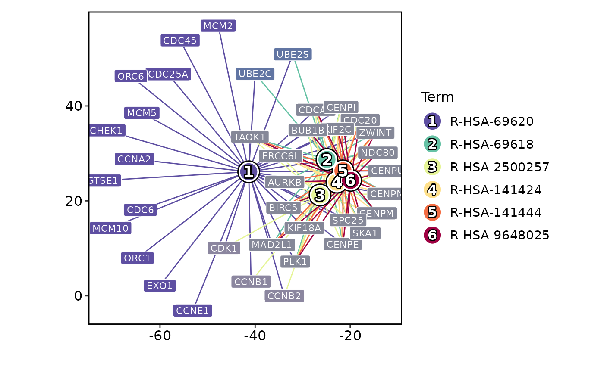
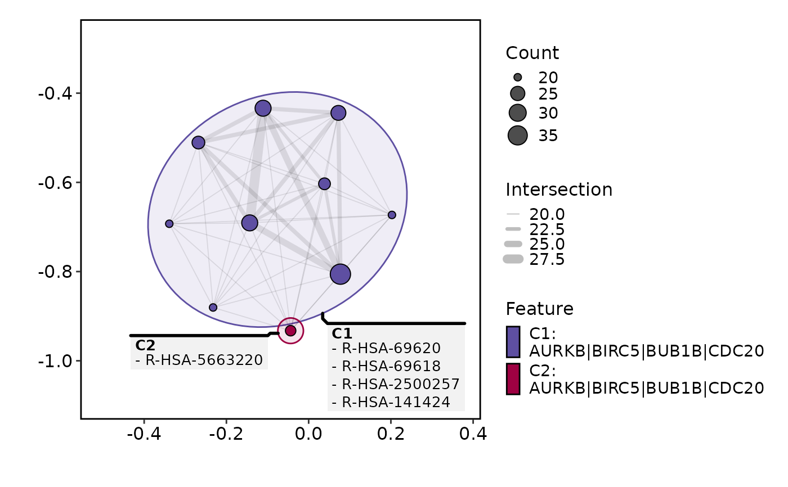
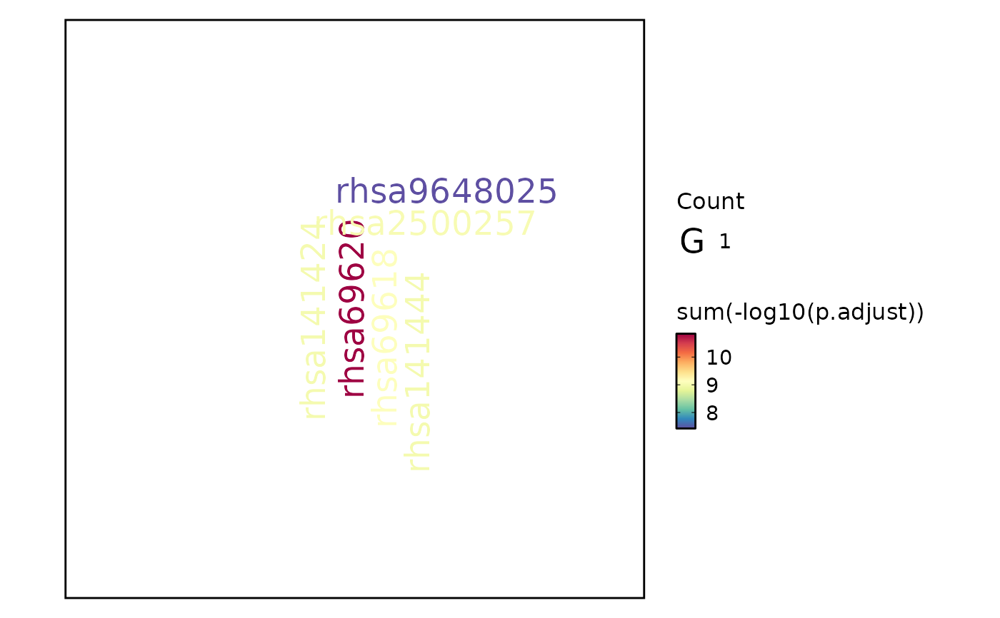

This function generates various types of plots for enrichment (over-representation) analysis.
Usage
EnrichmentPlot(
data,
top_term = NULL,
plot_type = c("bar", "dot", "lollipop", "network", "enrichmap", "wordcloud",
"comparison"),
x_by = NULL,
size_by = NULL,
fill_cutoff_name = NULL,
fill_name = NULL,
character_width = 50,
expand = NULL,
word_type = c("term", "feature"),
split_by = NULL,
split_by_sep = "_",
facet_by = NULL,
facet_scales = NULL,
group_by = NULL,
group_by_sep = "_",
metric = "p.adjust",
cutoff = NULL,
palette = "Spectral",
xlab = NULL,
ylab = NULL,
...
)Arguments
- data
A data frame with enrichment results generated by
clusterProfiler,enrichR, orenrichit.- top_term
Number of top terms to show in the plot. Default is 6 for all plots except "enrichmap" which is 100.
- plot_type
Type of plot to generate. Options are "bar", "dot", "lollipop", "network", "enrichmap", "wordcloud", "comparison".
- x_by
A character vector of column names to use for the x-axis. Default is NULL. Works only for "dot" and "lollipop".
- size_by
A character vector of column names to use for the size of the points. Default is NULL. Works only for "comparison", "dot" and "lollipop".
- fill_cutoff_name
The legend name for the terms above the cutoff value. Default is NULL. Works only for "comparison", "dot" and "lollipop".
- fill_name
The legend name for the metric. Default is NULL. Works only for "comparison", "dot" and "lollipop".
- character_width
The width of the terms in the plot. Default is 50. When the terms are too long, they will be wrapped to fit the width.
- expand
A numeric vector of length 1, 2 or 4 to expand the plot. Default is NULL. Works only for "bar" plot. See also plotthis::BarPlot.
- word_type
The type of word to show in the wordcloud. Options are "term" and "feature". Default is "term". Works only for "wordcloud".
- split_by
A character vector of column names to split the plots. Default is NULL.
- split_by_sep
A character to separate the split_by column names. Default is "_".
- facet_by
A character vector of column names to facet the plots. Default is NULL.
- facet_scales
The facet scales. Default is NULL.
- group_by
A character vector of column names to group the terms. Default is NULL. Works only for "comparison" plot.
- group_by_sep
A character to concatenate the group_by columns when there are multiple columns. Default is "_". Works only for "comparison" plot.
- metric
The column name to use for the metric. Default is "p.adjust".
- cutoff
The cutoff value to the metric to mark the tems on the plot. Default is NULL. Note that the terms are not filtered by this value. Use
top_termsto filter the terms. When specified:'bar' plot will show a line at the cutoff value
'dot' plot will show gray dots for the terms above the cutoff value
'lollipop' plot will show gray dots for the terms above the cutoff value
'comparison' plot will show gray dots for the terms above the cutoff value
has no effect on 'network', 'enrichmap', and 'wordcloud' plots
- palette
The color palette to use for the plot. Default is "Spectral". See plotthis::show_palettes for available palettes.
- xlab
The x-axis label. Default is NULL.
- ylab
The y-axis label. Default is NULL.
- ...
Other arguments passed to the specific plot function.
For "bar",
plotthis::BarPlot().For "dot",
plotthis::DotPlot().For "lollipop",
plotthis::LollipopPlot().For "network",
plotthis::EnrichNetwork().For "enrichmap",
plotthis::EnrichMap().For "wordcloud",
plotthis::WordCloudPlot().For "comparison",
plotthis::DotPlot().
Examples
set.seed(8525)
data(enrich_example, package = "plotthis")
data(enrich_multidb_example, package = "plotthis")
EnrichmentPlot(enrich_example)

EnrichmentPlot(enrich_example, cutoff = 0.05)

EnrichmentPlot(enrich_example, palette = "Paired")
# Multiple databases#'
EnrichmentPlot(enrich_multidb_example, facet_by = "Database", facet_nrow = 2)

enrich_example$Group <- sample(c("A", "B"), nrow(enrich_example), replace = TRUE)
EnrichmentPlot(enrich_example, plot_type = "comparison", group_by = "Group")

EnrichmentPlot(enrich_example, plot_type = "dot", top_term = 10)

EnrichmentPlot(enrich_example, plot_type = "lollipop", top_term = 10)

EnrichmentPlot(enrich_example, plot_type = "network")

EnrichmentPlot(enrich_example, plot_type = "enrichmap")

EnrichmentPlot(enrich_example, plot_type = "wordcloud")

# Wordcloud with feature
EnrichmentPlot(enrich_example, plot_type = "wordcloud", word_type = "feature")
